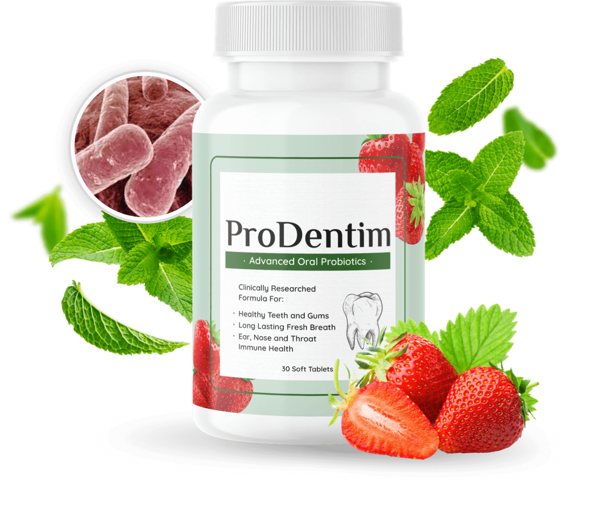

An honest look at this clinically researched oral probiotic formula for teeth, gums, and fresh breath.

👆 Touch & drag to explore
🔒 Secure checkout · 30-tablet supply
ProDentim is an advanced oral probiotic supplement formulated to support healthy teeth and gums, long-lasting fresh breath, and ear, nose, and throat immune health. Each soft tablet is built around a clinically researched blend designed to support a balanced oral microbiome — the community of bacteria that lives in your mouth.
Imbalanced bacteria can be linked to bad breath and weaker gum health.
Beneficial probiotic strains help support a healthier oral environment.
Simply chew one tablet daily as part of your routine — no water needed.
The probiotic blend is designed to support a healthier balance of oral bacteria.
With consistent use, many users report fresher breath and healthier-feeling gums.
Formulated to support stronger, healthier teeth and gums over time.
Designed to support long-lasting breath freshness throughout the day.
Made with natural ingredients, including mint and strawberry flavor.
Formulated to support ear, nose, and throat immune health.
Built around a clinically researched probiotic formula.
Just one soft tablet a day — no complicated routine required.
| Feature | ProDentim | Regular Mouthwash | Whitening Strips |
|---|---|---|---|
| Supports Oral Microbiome | ✔ | ✘ | ✘ |
| Plant-Based Formula | ✔ | ✘ | ✘ |
| Supports Fresh Breath | ✔ | ✔ | ✘ |
| No Harsh Chemicals | ✔ | ✘ | ✘ |
| Easy Daily Use | ✔ | ✔ | ✔ |
Chew one soft tablet daily as part of your regular routine.
ProDentim is made with a plant-based formula. As with any supplement, consult your doctor before use if you have a medical condition.
Experiences vary by person. Consistent daily use is typically recommended for the best results.
Please check the official order page for current pricing and payment details.
Refer to the official checkout page for the seller's current refund policy.
See current availability and pricing on the official order page.
Check Availability Now →